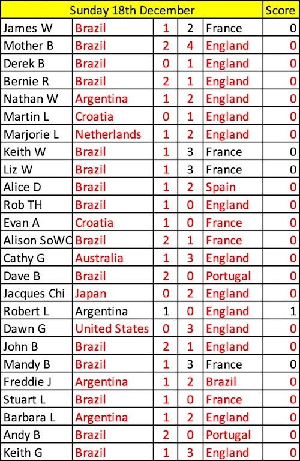

Competion Time!
Can You Beat Brian the Psychic Hedehog? - Yes It's Winter and He Has Hibernated - Go On You Know You Want To!
Leader Board

Quarter Finals Day Two Predictions
Quarter Finals Day Two!
Predictions and Leaders
Quater Finals Day 2
France 2 - Engalnd 1! Bugger. Harry Kane missed a penalty. We are sad!
Morocco 1 - Portugal 0! Morocco become the first African side to reach a world cup Semi Final
Jacques Chi was the only one pick up points and goes from 16th to 8th!!! Go Jacques!
Today Morocco play Portugal and Then England Play France to decide the remaining Semi Final places.
Lots of red on the sheet today. Not many backed Morocco to get this far!
Alison SoWC Still in the lead and Mandy B is now by herself in Second Place.
Hope you are still having fun!
Good luck and enjoy!
Thelwall the Robot is Back
Last 16!
Video ArchiveStuart Loses His Grip!
I looks like we whatever happens there will be a new champion this year.